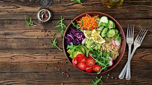

Vegetarian diets have reportedly been around since as early as 700 B.C.Several types exist and individuals may practice them for a variety of reasons, including health, ethics, environmentalism and religion.
Vegan diets are a little more recent, but are getting a good amount of press.
This article takes a look at the similarities and differences between these two diets.
It also discusses how they affect your health and the environment.

According to the Vegetarian Society, a vegetarian is someone who does not eat any meat, poultry, game, fish, shellfish or by-products of animal slaughter.
Vegetarian diets contain various levels of fruits, vegetables, grains, pulses, nuts and seeds. The inclusion of dairy and eggs depends on the type of diet you follow.
The most common types of vegetarians include:
A vegan diet can be viewed as the strictest form of vegetarianism.
Veganism is currently defined by the Vegan Society as a way of living that attempts to exclude all forms of animal exploitation and cruelty as much as possible.
This includes exploitation for food and any other purpose.
Therefore, a honey, carmine, pepsin, shellac, albumin, whey, casein and some forms of vitamin D3.
Vegetarians and vegans often avoid eating animal products for similar reasons. The largest difference is the degree to which they consider animal products acceptable.
For instance, both vegans and vegetarians may exclude meat from their diets for health or environmental reasons.
However, vegans also choose to avoid all animal by-products because they believe this has the largest impact on their health and the environment.
In terms of ethics, vegetarians are opposed to killing animals for food, but consider it acceptable to consume animal by-products such as milk and eggs, as long as the animals are kept in adequate conditions.
On the other hand, vegans believe that animals have a right to be free from human use, be it for food, clothing, science or entertainment.
Thus, they seek to exclude all animal by-products, regardless of the conditions in which animals are bred or housed.
The desire to avoid all forms of animal exploitation is why vegans choose to forgo dairy and eggs products that many vegetarians have no problem consuming.
Subcription

| Vegan | Veg |
|---|---|
| A vegan diet may be better than a vegetarian diet for controlling weight and reducing the risk of certain diseases. | Vegetarian diets exclude meat, poultry, game, fish and shellfish. |
| A vegan diet may be better than a vegetarian diet for controlling weight and reducing the risk of certain diseases | A veg diet may be better than a non veg diet for controlling weight and reducing the risk of certain diseases |
{kind=link}